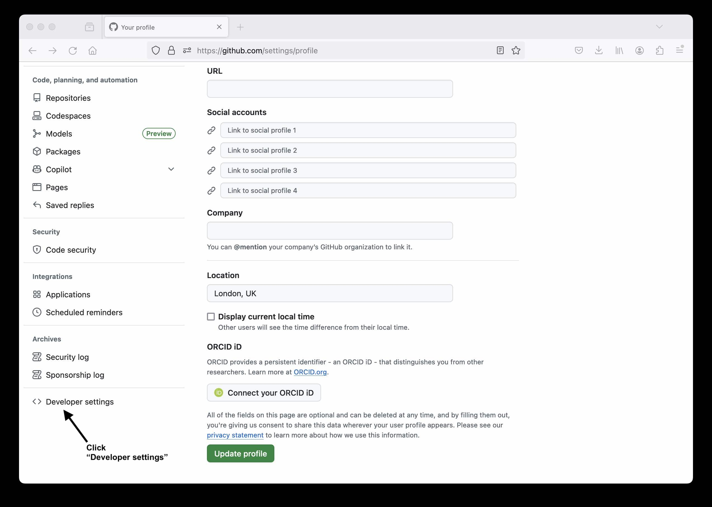
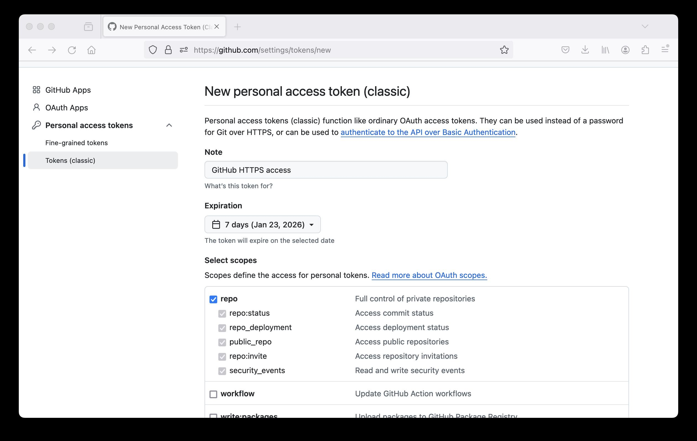
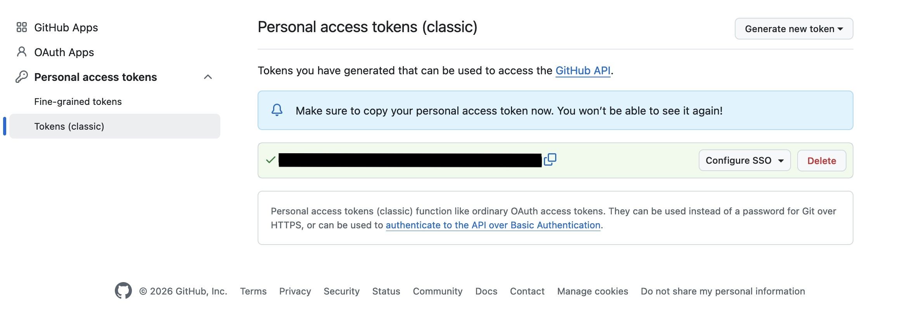
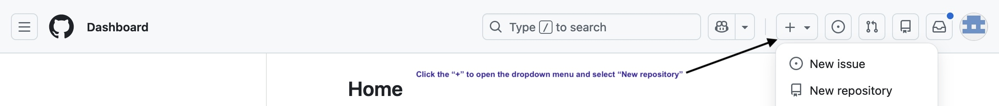
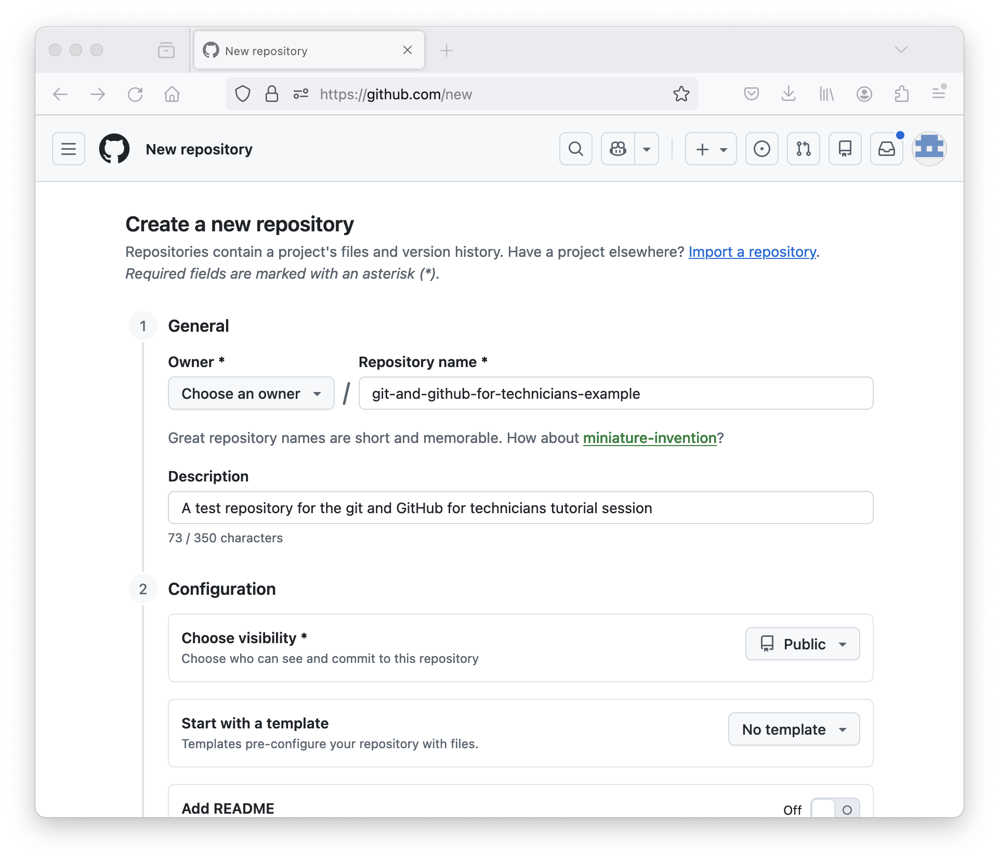
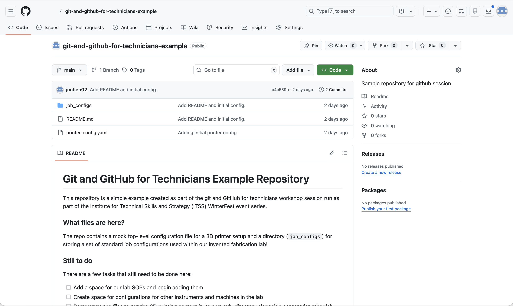
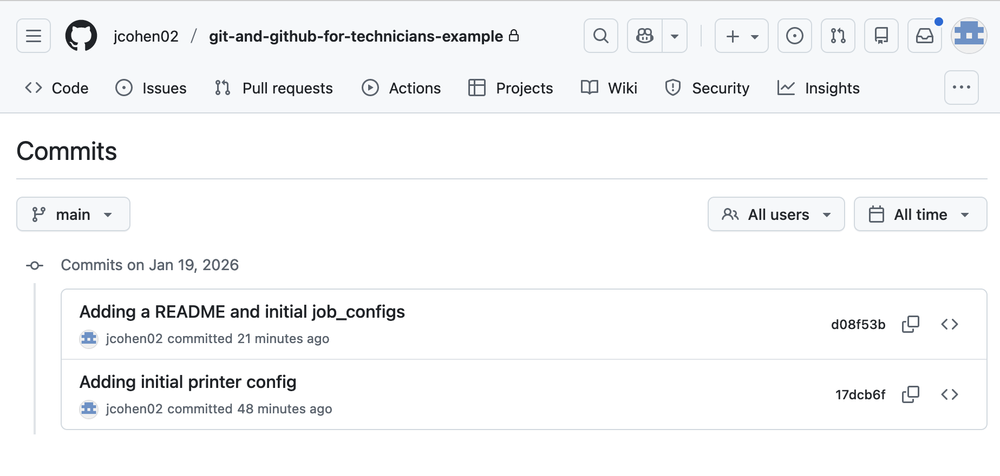
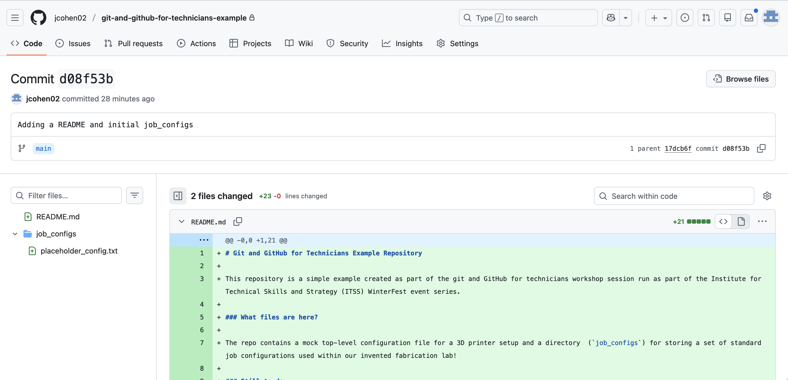

We’re now going to create a personal access token so that you can
authenticate with GitHub on the command line.
Callout
It’s important to note that Personal Access Tokens are NOT
the recommended way of authenticating with GitHub when using it
for everyday use. We’re using this approach here due to time
constraints. For proper GitHub use, you should set up an SSH keypair and
use SSH-based authentication to GitHub. There’s lots of information on
this in the GitHub documentation and another great reference is the material
in the Carpentries git lesson on SSH setup.
Setting up an access token
Go to your GitHub homepage (https://github.com), click your user icon
at the top right of the page and select “Settings”.
Location of the GitHub user menu where Settings
is located.
At the bottom of the Settings menu, select “Developer
settings”.

Location of the “Developer settings” option on
the GitHub Settings page.
Now expand the “Personal access tokens” option on the
menu on the left, select “Tokens (classic)” and then towards
the right-hand side of the page, click “Generate new token” and
then the “Generate new token (classic)” option.
Location of the “Generate new token (classic)”
option on the GitHub personal access tokens setup page.
Add a name/purpose for your token. Set the expiry to 7 days and
select the top level “repo” option under “Select scopes”. You can then
scroll to the bottom and click “Generate token”.

Screenshot showing personal access token
configuration options.
Your new token should be displayed. This will be your password
for accessing GitHub from the command line. Store it in a secure
location. YOU WILL NOT BE ABLE TO VIEW THIS TOKEN AGAIN.

Screenshot showing generated access token.
Create a GitHub repository
We’ll now create a repository in GitHub that we can link to the local
repository that you created on your computer a short while ago.
We can than synchronise the content of your local repository on your
computer with the version on GitHub.
The version on GitHub acts like a cloud-based backup of your local
content but, more importantly, it provides a remote copy of your
repository content that you can share with collaborators who can work
with you on updating/contributing to the content.
Select the “New repository” option under the “+” menu in the top
bar of the GitHub page.

Location of the “New repository” option on the
GitHub web interface.
Add some details to create your new repository on GitHub. Call
your repository “git-and-github-for-technicians” (or you can
use a different name if you prefer). If you see “Choose an owner” option
to the left of the “Repository name” box, click it and select your
GitHub username. However, this may be pre-populated with your
username.
You can choose whether you want to make your repository public or
private. If it’s public, it will be publicly visible to everyone on
GitHub. If it’s private, then it will initially only be accessible by
you but you can add other GitHub users as collaborators who will be able
to view and edit the content in your repository (if you give them the
permissions to do so).

Screenshot showing options to select for
creating a new repository in GitHub.
Your repository is now created and GitHub provides some helpful
information on how to proceed to get some content into your repository.
Make sure you’re looking at the HTTPS option.
We already created a repository locally a short while ago so we’re
going to “push” that repository from our local computer to this new
repository we created in GitHub, using something similar to the example
shown in GitHub to “push an existing repository from the command
line”.
Push our repository from our local computer to GitHub
Back in your shell on your computer, make sure you’re in the
git-intro directory. We’re going to set up something called
a remote - a remote location that your repository is linked to. You can
have multiple remotes. This is one of the key aspects of the
“distributed” nature of git. There are some reasons why you might want
to do this but the details are out of scope in this quick intro.
Let’s add the repository we created in GitHub as a remote on
our local repository:
BASH
$ git remote add origin https://github.com/[YOUR GITHUB USERNAME]/git-and-github-for-technicians-example.git$ git remote -v# This will show details of remotes you've set up
Note the origin on the left hand side. Each git “remote”
has a name. This is important because if you have multiple remotes, so
that you can synchronise your code with different remote repository
locations, you need to know which one you’re synchronising with.
“origin” is the default name for the main remote for a repository. It’s
a convention and it’s simply a string, you could call it anything (and
it can be renamed) but “origin” is used by default.
We’re now going to “push” our local repository to GitHub. What does
this mean?
All the content of our local repository will be sent to GitHub.
This includes the current version of the files and all the history -
the changes that were made over time.
BASH
$ git push origin main
When prompted for your username, enter your GitHub username. For the
password, enter the access token you created a short while ago. You
should see output similar to the following. If this worked, your
repository is now in GitHub.
OUTPUT
Username for 'https://github.com': [YOUR_USERNAME]
Password for 'https://[YOUR_USERNAME]@github.com':
Enumerating objects: 3, done.
Counting objects: 100% (3/3), done.
Delta compression using up to 12 threads
Compressing objects: 100% (2/2), done.
Writing objects: 100% (3/3), 664 bytes | 664.00 KiB/s, done.
Total 3 (delta 0), reused 0 (delta 0), pack-reused 0
To https://github.com/[YOUR_USERNAME]/git-and-github-for-technicians-example.git
* [new branch] main -> main
Exploring our repository in GitHub
We can now go back to our repository page in GitHub and explore the
content there. As you’ll see, it provides a much more user-friendly
interface for browsing your repository content.

GitHub respository page in the web interface
showing README and files.
You can look at the commits and also see what has been changed in
each one:

Repository commits shown in the GitHub web
interface.

GitHub web interface showing the changes
associated with a commit.
 Location of the GitHub user menu where Settings is located.
Location of the GitHub user menu where Settings is located. Location of the “Generate new token (classic)” option on the GitHub personal access tokens setup page.
Location of the “Generate new token (classic)” option on the GitHub personal access tokens setup page.